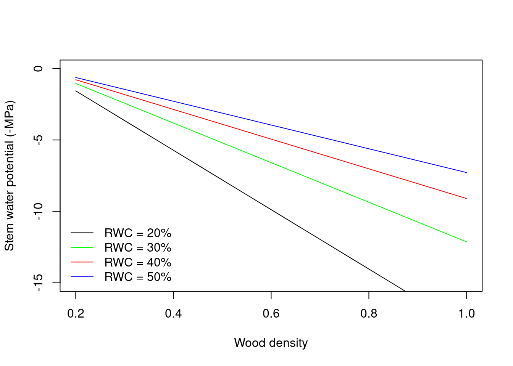
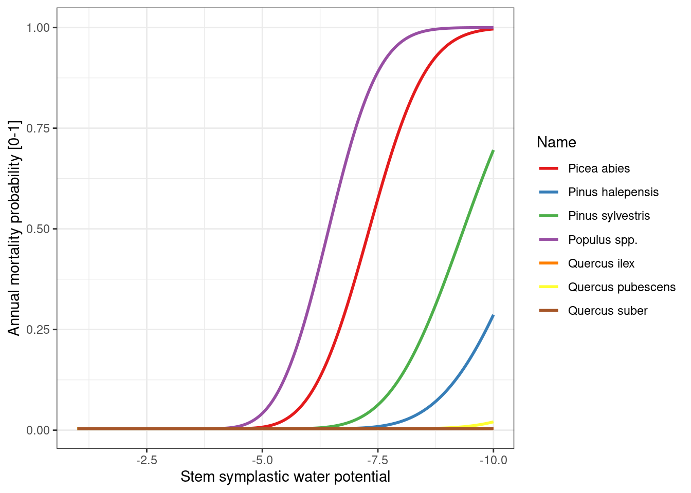
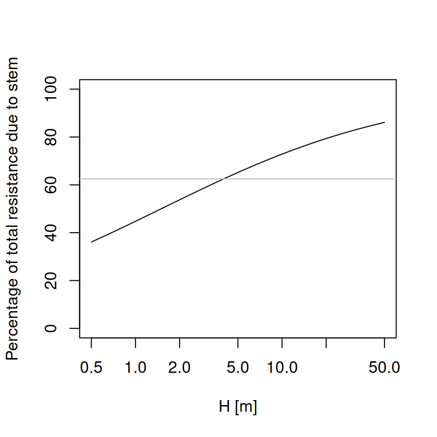
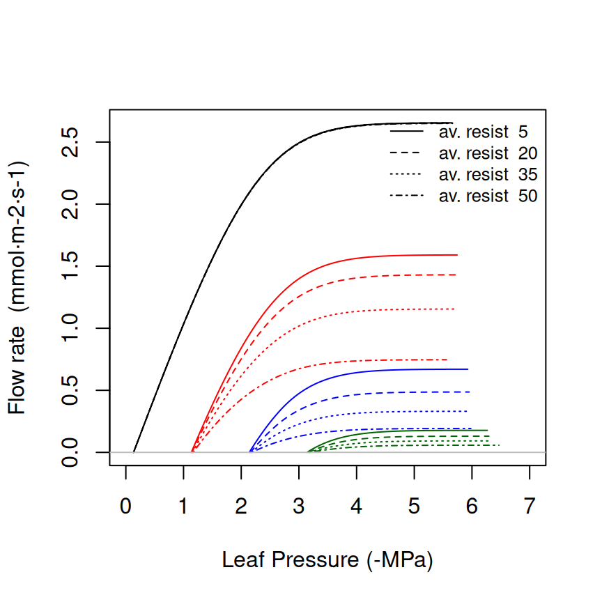

A Inbuilt parameter estimation
A.1 Introduction
Package medfate has been designed to allow simulations requiring a minimum set of vegetation functional parameters. This entails that several other parameters have to be estimated automatically (via inbuilt procedures) before starting simulations. Inbuilt parameter estimation is done in functions spwbInput() and growthInput(), with the user controlling the process through the species parameter table input (e.g., SpParamsMED) and the object control (see default control values in defaultControl()).
A.2 Strict, scaled and imputable parameters
Different kinds of vegetation functional parameters can be distinguished according to whether inbuilt parameter estimation is possible and how it is conducted:
- Strictly-required parameters are those for which there are no inbuilt estimation procedures implemented in the initialization functions. Hence, either values in the species parameter table input are non-missing or suitable values need to be specified before running simulation models. Since medfate ver. 2.3, only plant/leaf classification parameters and plant size parameters are strict. The remaining ones can be estimated from other parameters. This facilitates having a functional species parameter table, because only a set of parameters have to be strictly filled, from either soft trait databases or forest inventory data.
- Scaled parameters are functional parameters that cannot be defined at the species level, because they need to be estimated taking into account the size and structure of the plant cohort. These are not normally defined at the level of species parameter table. Specific
controlparameters are used to determine how scaling is performed. - Imputable parameters parameters are those for which the initialization routines can provide default values or estimations derived from relationships with other parameters. Parameter imputation is conducted if control parameter
fillMissingSpParams = TRUE. Sometimes, default parameter values are also specified in thecontrolobject.
The following tables describe how the different functional parameters are dealt with, grouped by function. Links are given to the chapter subsections where scaling and/or imputation procedures are described.
Plant/leaf classification
| Symbol | R | Description | Strict | Scaled | Imputable |
|---|---|---|---|---|---|
| \(GF\) | GrowthForm |
Growth form, defined depending on the treatment in forest inventory plots (Tree, Shrub or Tree/Shrub) | Yes | No | No |
| \(LF\) | LifeForm |
Raunkiaer life form | Yes | No | No |
| \(L_{shape}\) | LeafShape |
Leaf type (Linear, Needle, Broad, Scale, Spines or Succulent) | Yes | No | No |
| \(L_{size}\) | LeafSize |
Leaf size (Small, Medium, Large) | Yes | No | No |
| \(L_{pheno}\) | PhenologyType |
Leaf phenology type | Yes | No | No |
Plant size
| Symbol | R | Description | Strict | Scaled | Imputable |
|---|---|---|---|---|---|
| \(H_{max}\) | Hmed |
Maximum plant height | Yes | No | No |
| \(H_{med}\) | Hmed |
Median plant height | Yes | No | No |
| \(Z_{50}\) | Z50 |
Depth above which 50% of the fine root mass is located | No | No | A.3.2 |
| \(Z_{95}\) | Z95 |
Depth above which 95% of the fine root mass is located | Yes | No | No |
| \(Z_{100}\) | Z100 |
Depth above which 100% of the fine root mass is located | No | No | A.3.2 |
Allometric coefficients
| Symbol | R | Description | Strict | Scaled | Imputable |
|---|---|---|---|---|---|
| \(a_{ash}\), \(b_{ash}\) | a_ash, b_ash |
Coefficients relating the square of shrub height with shrub area | No | No | A.3.3 |
| \(a_{bsh}\), \(b_{bsh}\) | a_bsh, b_bsh |
Coefficients relating crown volume with dry weight of shrub individuals | No | No | A.3.3 |
| \(cr\) | cr |
Ratio between crown length and total height for shrubs | No | No | A.3.3 |
| \(a_{fbt}\), \(b_{fbt}\), \(c_{fbt}\) | a_fbt, b_fbt, c_fbt |
Coefficients to calculate foliar biomass of an individual tree | No | No | A.3.4 |
| \(a_{cr}\), \(b_{1cr}\), \(b_{2cr}\), \(b_{3cr}\), \(c_{1cr}\), \(c_{2cr}\) | a_cr, b_1cr, b_2cr, b_3cr, c_1cr, c_2cr |
Coefficients to calculate crown ratio of trees | No | No | A.3.4 |
| \(a_{cw}\), \(b_{cw}\) | a_cw, b_cw |
Regression coefficients used to calculate the crown width of trees | No | No | A.3.4 |
| \(f_{HD,min}\) | fHDmin |
Minimum height-to-diameter ratio | No | No | A.3.4 |
| \(f_{HD,max}\) | fHDmax |
Maximum height-to-diameter ratio | No | No | A.3.4 |
Leaf phenology
| Symbol | R | Description | Strict | Scaled | Imputable |
|---|---|---|---|---|---|
| \(LD\) | LeafDuration |
Average duration of leaves | No | No | A.3.10 |
| \(t_{0,eco}\) | t0gdd |
Degree days corresponding to leaf budburst | No | No | A.3.10 |
| \(S^*_{eco}\) | Sgdd |
Degree days corresponding to leaf budburst | No | No | A.3.10 |
| \(T_{eco}\) | Tbgdd |
Base temperature for the calculation of degree days to leaf budburst | No | No | A.3.10 |
| \(S^*_{sen}\) | Ssen |
Degree days corresponding to leaf senescence | No | No | A.3.10 |
| \(Ph_{sen}\) | Phsen |
Photoperiod corresponding to start counting senescence degree-days | No | No | A.3.10 |
| \(T_{sen}\) | Tbsen |
Base temperature for the calculation of degree days to leaf senescence | No | No | A.3.10 |
| \(x_{sen}\) | xsen |
Discrete values, to allow for any absent/proportional/more than proportional effects of temperature on senescence | No | No | A.3.10 |
| \(y_{sen}\) | ysen |
Discrete values, to allow for any absent/proportional/more than proportional effects of photoperiod on senescence | No | No | A.3.10 |
Plant anatomy
| Symbol | R | Description | Strict | Scaled | Imputable |
|---|---|---|---|---|---|
| \(1/H_{v}\) | Al2As |
Ratio of leaf area to sapwood area | No | No | A.3.8 |
| \(RLR\) | Ar2Al |
Fine root area to leaf area ratio | No | No | A.3.9 |
| \(LW\) | LeafWidth |
Leaf width | No | No | A.3.5 |
| \(SLA\) | SLA |
Specific leaf area | No | No | A.3.5 |
| \(\rho_{leaf}\) | LeafDensity |
Leaf tissue density | No | No | A.3.6 |
| \(\rho_{wood}\) | WoodDensity |
Wood tissue density | No | No | A.3.6 |
| \(\rho_{fineroot}\) | FineRootDensity |
Fine root tissue density | No | No | A.3.6 |
| \(f_{conduits}\) | conduit2sapwood |
Proportion of sapwood corresponding to xylem conduits | No | No | A.3.8 |
| \(SRL\) | SRL |
Specific fine root length | No | No | A.3.7 |
| \(RLD\) | RLD |
Fine root length density | No | No | A.3.7 |
| \(r_{6.35}\) | r635 |
Ratio between the weight of leaves plus branches and the weight of leaves alone for branches of 6.35 mm | No | No | A.3.5 |
Radiation balance and water interception
| Symbol | R | Description | Strict | Scaled | Imputable |
|---|---|---|---|---|---|
| \(k_{b}\) | kDIR |
Direct light extinction coefficient | No | No | A.3.12 |
| \(k_{PAR}\) | kPAR |
PAR extinction coefficient | No | No | A.3.12 |
| \(\alpha_{SWR}\) | alphaSWR |
Short-wave radiation leaf absorbance coefficient | No | No | A.3.12 |
| \(\gamma_{SWR}\) | gammaSWR |
Short-wave radiation leaf reflectance (albedo) | No | No | A.3.12 |
| \(s_{water}\) | g |
Crown water storage capacity | No | No | A.3.12 |
Hydraulics, transpiration, photosynthesis
| Symbol | R | Description | Strict | Scaled | Imputable |
|---|---|---|---|---|---|
| \(T_{max, LAI}\) | Tmax_LAI |
Empirical coefficient relating LAI with the ratio of maximum transpiration over potential evapotranspiration | No | No | A.3.11 |
| \(T_{max, sqLAI}\) | Tmax_LAIsq |
Empirical coefficient relating squared LAI with the ratio of maximum transpiration over potential evapotranspiration | No | No | A.3.11 |
| \(WUE_{\max}\) | WUE |
Water use efficiency at VPD = 1kPa and without light or CO2 limitations | No | No | A.3.11 |
| \(WUE_{PAR}\) | WUE_par |
Coefficient describing the progressive decay of WUE with lower light levels | No | No | A.3.11 |
| \(WUE_{CO2}\) | WUE_co2 |
Coefficient for WUE dependency on atmospheric CO2 concentration | No | No | A.3.11 |
| \(WUE_{VPD}\) | WUE_vpd |
Coefficient for WUE dependency on vapor pressure deficit | No | No | A.3.11 |
| \(\Psi_{extract}\) | Psi_Extract |
The water potential at which plant transpiration is 50% of its maximum | No | No | A.3.11 |
| \(\Psi_{critic}\) | Psi_Critic |
The water potential corresponding to 50% of stem xylem cavitation | No | No | A.3.17 |
| \(g_{swmin}\) | Gwmin |
Minimum stomatal conductance to water vapour | No | No | A.3.13 |
| \(g_{swmax}\) | Gwmax |
Maximum stomatal conductance to water vapour | No | No | A.3.13 |
| \(J_{max, 298}\) | Jmax298 |
Maximum rate of electron transport at 298K | No | No | A.3.18 |
| \(V_{max, 298}\) | Vmax298 |
Rubisco’s maximum carboxylation rate at 298K | No | No | A.3.18 |
| \(K_{stem,max,ref}\) | Kmax_stemxylem |
Maximum stem sapwood reference conductivity per leaf area unit | No | No | A.3.15 |
| \(K_{root,max,ref}\) | Kmax_rootxylem |
Maximum root sapwood reference conductivity per leaf area unit | No | No | A.3.15 |
| \(k_{leaf, \max}\) | VCleaf_kmax |
Maximum leaf hydraulic conductance | No | A.4.2 | A.3.16 |
| \(k_{stem, \max}\) | VCstem_kmax |
Maximum stem hydraulic conductance | No | A.4.1 | No |
| \(k_{root, \max,s}\) | VCroot_kmax |
Maximum root hydraulic conductance for each soil layer | No | A.4.3 | No |
| \(k_{rhizo,\max, s}\) | VGrhizo_kmax |
Maximum hydraulic conductance of the rhizosphere for each soil layer | No | A.4.4 | No |
| \(c_{leaf}\), \(d_{leaf}\) | VCleaf_c, VCleaf_d |
Parameters of the vulnerability curve for leaves | No | No | A.3.17 |
| \(c_{stem}\), \(d_{stem}\) | VCstem_c, VCstem_d |
Parameters of the vulnerability curve for stem xylem | No | No | A.3.17 |
| \(c_{root}\), \(d_{root}\) | VCroot_c, VCroot_d |
Parameters of the vulnerability curve for root xylem | No | No | A.3.17 |
Plant water storage
| Symbol | R | Description | Strict | Scaled | Imputable |
|---|---|---|---|---|---|
| \(\epsilon_{leaf}\) | LeafEPS |
Modulus of elasticity of leaves | No | No | A.3.14 |
| \(\epsilon_{stem}\) | StemEPS |
Modulus of elasticity of symplastic xylem tissue | No | No | A.3.14 |
| \(\pi_{0,leaf}\) | LeafPI0 |
Osmotic potential at full turgor of leaves | No | No | A.3.14 |
| \(\pi_{0,stem}\) | StemPI0 |
Osmotic potential at full turgor of symplastic xylem tissue | No | No | A.3.14 |
| \(f_{apo,leaf}\) | LeafAF |
Apoplastic fraction in leaf tissues | No | No | A.3.14 |
| \(f_{apo,stem}\) | StemAF |
Apoplastic fraction in stem tissues | No | No | A.3.14 |
| \(V_{leaf}\) | Vleaf |
Leaf water capacity per leaf area unit | No | A.4.5 | No |
| \(V_{sapwood}\) | Vsapwood |
Sapwood water capacity per leaf area unit | No | A.4.5 | No |
Growth and mortality
| Symbol | R | Description | Strict | Scaled | Imputable |
|---|---|---|---|---|---|
| \(N_{leaf}\) | Nleaf |
Leaf nitrogen concentration per dry mass | No | No | A.3.19 |
| \(N_{sapwood}\) | Nsapwood |
Sapwood nitrogen concentration per dry mass | No | No | A.3.19 |
| \(N_{fineroot}\) | Nfineroot |
Fine root nitrogen concentration per dry mass | No | No | A.3.19 |
| \(MR_{leaf}\) | RERleaf |
Leaf respiration rate at 20 ºC | No | No | A.3.19 |
| \(MR_{sapwood}\) | RERsapwood |
Living sapwood (parenchymatic tissue) respiration rate at 20 ºC | No | No | A.3.19 |
| \(MR_{fineroot}\) | RERfineroot |
Fine root respiration rate at 20 ºC | No | No | A.3.19 |
| \(RGR_{leaf, max}\) | RGRleafmax |
Maximum leaf area daily growth rate, relative to sapwood area | No | No | A.3.20 |
| \(RGR_{cambium, max}\) | RGRsapwoodmax |
Maximum tree daily sapwood growth rate relative to cambium perimeter length | No | No | A.3.20 |
| \(RGR_{sapwood, max}\) | RGRsapwoodmax |
Maximum shrub daily sapwood growth rate relative to sapwood area | No | No | A.3.20 |
| \(RGR_{fineroot, max}\) | RGRfinerootmax |
Maximum daily fine root relative growth rate | No | No | A.3.20 |
| \(SR_{sapwood}\) | SRsapwood |
Daily sapwood senescence rate | No | No | A.3.21 |
| \(SR_{fineroot}\) | SRfineroot |
Daily fine root senescence rate | No | No | A.3.21 |
| \(RSSG\) | RSSG |
Minimum relative starch for sapwood growth | No | No | A.3.22 |
| \(C_{wood}\) | WoodC |
Wood carbon content per dry weight | No | No | A.3.23 |
| \(P_{mort,base}\) | MortalityBaselineRate |
Default deterministic proportion or probability specifying the baseline reduction of cohort’s density occurring in a year | No | No | A.3.24 |
Recruitment
| Symbol | R | Description | Strict | Scaled | Imputable |
|---|---|---|---|---|---|
| \(H_{seed}\) | SeedProductionHeight |
Minimum height for seed production | No | No | A.3.25 |
| \(TCM_{recr}\) | MinTempRecr |
Minimum average temperature (Celsius) of the coldest month for successful recruitment | No | No | A.3.25 |
| \(MI_{recr}\) | MinMoistureRecr |
Minimum value of the moisture index for successful recruitment | No | No | A.3.25 |
| \(FPAR_{recr}\) | MinFPARRecr |
Minimum percentage of PAR at the ground level for successful recruitment | No | No | A.3.25 |
| \(DBH_{recr}\) | RecrTreeDBH |
Recruitment DBH for trees | No | No | A.3.25 |
| \(H_{tree, recr}\) | RecrTreeHeight |
Recruitment height for trees | No | No | A.3.25 |
| \(N_{tree, recr}\) | RecrTreeDensity |
Recruitment density for trees | No | No | A.3.25 |
| \(Cover_{shrub, recr}\) | RecrShrubCover |
Recruitment cover for shrubs | No | No | A.3.25 |
| \(H_{shrub, recr}\) | RecrShrubHeight |
Recruitment height for shrubs | No | No | A.3.25 |
| \(Z50_{recr}\) | RecrZ50 |
Soil depth corresponding to 50% of fine roots for recruitment | No | No | A.3.25 |
| \(Z95_{recr}\) | RecrZ95 |
Soil depth corresponding to 95% of fine roots for recruitment | No | No | A.3.25 |
Flammability
| Symbol | R | Description | Strict | Scaled | Imputable |
|---|---|---|---|---|---|
| \(\rho_{p}\) | PD |
Density of fuel particles | No | No | A.3.26 |
| \(\sigma\) | SAV |
Surface-area-to-volume ratio of the small fuel (1h) fraction (leaves and branches < 6.35mm) | No | No | A.3.26 |
| \(h\) | HeatContent |
High fuel heat content. | No | No | A.3.26 |
| \(LI\) | PercentLignin |
Percentage of lignin in leaves | No | No | A.3.26 |
A.3 Imputation of missing values
A.3.1 Genus-level imputation
Given that plant traits have some degree of phylogenetic conservatism, parameter imputation of species parameter values is performed primarily by looking for the corresponding genus-average, which should be available in SpParams. This genus-based imputation can be controlled using fillMissingWithGenusParams, which by default is TRUE (setting it to FALSE is not normally recommended). Should the parameter be also missing at the genus level, medfate will try an imputation based on trait coordination or family-level average values, depending on the case. In the following subsections we report the percentage of species-level variance that is accounted for by genus-level or family-level averages, and detail trait-coordination relationships when used for imputation.
The following figure summarizes the percentage of missing values in SpParamsMED for different model parameters and the other model parameters used for the imputation of missing values:

Figure A.1: Representation of imputation relationships between model parameters. The percentage of missing parameter values increases from left to right. Left-most parameters are strict.
A.3.2 Rooting depth
Parameter \(Z_{95}\) is a strict parameter, but \(Z_{50}\) and \(Z_{100}\) can be imputed when missing, using the following formulae: \[\begin{eqnarray} Z_{50} &=& \exp(\log(Z_{95})/1.4) \\ Z_{100} &=& \exp(\log(Z_{95})/0.95) \end{eqnarray}\]
Note that \(Z_{100}\) will be imputed only if truncateRootDistribution = TRUE in the control parameters.
A.3.3 Shrub allometric coefficients
Missing shrub allometric coefficients are filled using information from Raunkiaer’s life form and maximum plant height (\(H_{max}\)).
| Life form | \(H_{max}\) | \(a_{ash}\) | \(b_{ash}\) | \(a_{bsh}\) | \(b_{bsh}\) | \(cr\) |
|---|---|---|---|---|---|---|
| Chamaephyte | [any] | 24.5888 | 1.1662 | 0.7963 | 0.3762 | 0.8076 |
| Phanerophyte | < 300 cm | 1.0083 | 1.8700 | 0.7900 | 0.6942 | 0.6630 |
| Phanerophyte | > 300 cm | 5.8458 | 1.4944 | 0.3596 | 0.7138 | 0.7190 |
| (Hemi)cryptophyte | [any] | 24.5888 | 1.1662 | 0.7963 | 0.3762 | 0.9500 |
Allometric coefficients were taken from De Cáceres et al. (2019).
A.3.4 Tree allometric coefficients
Missing tree allometric coefficients are replaced with values depending on whether the plant species is a gymnosperm or an angiosperm:
| Parameter | Gymnosperm | Angiosperm |
|---|---|---|
| \(a_{fbt}\) | 0.1300 | 0.0527 |
| \(b_{fbt}\) | 1.2285 | 1.5782 |
| \(c_{fbt}\) | -0.0147 | -0.0066 |
| \(a_{cw}\) | 0.747 | 0.839 |
| \(b_{cw}\) | 0.672 | 0.735 |
| \(a_{cr}\) | 1.995 | 1.506 |
| \(b_{1cr}\) | -0.649 | -0.706 |
| \(b_{2cr}\) | -0.020 | -0.078 |
| \(b_{3cr}\) | -0.00012 | 0.00018 |
| \(c_{1cr}\) | -0.004 | -0.007 |
| \(c_{2cr}\) | -0.159 | 0.000 |
| \(fHD_{min}\) | 80 | 40 |
| \(fHD_{max}\) | 120 | 140 |
A.3.5 Leaf width, specific leaf area and fine foliar ratio
Leaf width (\(LW\)), specific leaf area (\(SLA\)) and the ratio between the weight of leaves plus branches and the weight of leaves alone for branches of 6.35 mm (\(r_{6.35}\)) are key anatomical parameters. When missing from species parameter table, default estimates for these parameters are obtained from combinations of leaf shape and leaf size:
| Leaf shape | Leaf size | \(SLA\) | \(LW\) | \(r_{6.35}\) |
|---|---|---|---|---|
| Broad | Large | 16.039 | 6.898 | 2.278 |
| Broad | Medium | 11.499 | 3.054 | 2.359 |
| Broad | Small | 9.540 | 0.644 | 3.026 |
| Linear | Large | 5.522 | 0.639 | 3.261 |
| Linear | Medium | 4.144 | 0.639 | 3.261 |
| Linear | Small | 13.189 | 0.639 | 3.261 |
| Needle | [any] | 9.024 | 0.379 | 1.716 |
| Spines | [any] | 9.024 | 0.379 | 1.716 |
| Scale | [any] | 4.544 | 0.101 | 1.483 |
These estimates have been obtained by averaging species-level values across combinations of the categorical variables.
A.3.6 Tissue density
Imputation of the dry weight density of leaves, wood and fine roots (in \(g \cdot cm^{-3}\)) is first performed at the genus level using the corresponding row of SpParams. When genus-level averages are also missing, imputation is performed using taxonomic family (internal data set medfate:::trait_family_means). The percentage of species-level explained variance of these imputations is reported in the following table:
| Trait | spp. | Family (%) | Genus (%) | Total (%) |
|---|---|---|---|---|
| LeafDensity | 4258 | 14.89 | 28.98 | 43.9 |
| WoodDensity | 14682 | 23.24 | 50.82 | 74.1 |
| FineRootDensity | 1490 | 8.76 | 32.86 | 41.6 |
If the family is not any of those in the table, default values are \(\rho_{leaf} = 0.7\) and \(\rho_{wood} = 0.652\) and \(\rho_{fineroot} = 0.165\).
A.3.7 Specific root length and root length density
Imputation of specific fine root length and fine root length density is first performed at the genus level using the corresponding row of SpParams. When genus-level averages are also missing, imputation of specific fine root length is performed using taxonomic family (internal data set medfate:::trait_family_means). The percentage of species-level explained variance of these imputations is reported in the following table:
| Trait | spp. | Family (%) | Genus (%) | Total (%) |
|---|---|---|---|---|
| SRL | 2093 | 8.48 | 25.87 | 34.3 |
Default value for specific fine root length is \(3870\, cm \cdot g^{-1}\). Fine root length density is imputed a value \(10\, cm \cdot cm^{-3}\) when missing at the genus level.
A.3.8 Huber value and ratio of conduits to sapwood
Imputation of the Al2As, the inverse of the Huber value (\(1/Hv\)) and the fraction of sapwood area corresponding to xylem conduits (conduit2sapwood; \(f_{conduits}\)) is first performed at the genus level using the corresponding row of SpParams. When genus-level averages are also missing, imputation is performed using taxonomic family (internal data set medfate:::trait_family_means). The percentage of species-level explained variance of these imputations is reported in the following table:
| Trait | spp. | Family (%) | Genus (%) | Total (%) |
|---|---|---|---|---|
| conduit2sapwood | 651 | 28.14 | 42.64 | 70.8 |
| Al2As | 1330 | 6.66 | 54.69 | 61.4 |
If there is no information derived from taxonomic family for Al2As, a default value is given depending on leaf shape and leaf size:
| Leaf shape | Leaf size | Al2As |
|---|---|---|
| Broad | Large | 4768.7 |
| Broad | Medium | 2446.1 |
| Broad | Small | 2284.9 |
| Linear | Large | 2156.0 |
| Linear | Medium | 2156.0 |
| Linear | Small | 2156.0 |
| Needle | [any] | 2751.7 |
| Scale | [any] | 1696.6 |
Missing values for \(f_{conduits}\), the fraction of sapwood corresponding to conduits are derived from taxonomic family (see table above). If information from taxonomic family is missing, default values are \(f_{conduits} = 0.7\) (i.e. 30% of parenchyma) for angiosperms, and \(f_{conduits} = 0.925\) (i.e. 7.5% of parenchyma) for gymnosperms (Plavcová & Jansen 2015).
A.3.9 Fine root to leaf area ratio
When missing, the fine root area to leaf area ratio is given a default value of \(RLR = 1\; m^2\cdot m^{-2}\).
A.3.10 Leaf phenology
When missing, leaf duration is assigned a value of 1 year for winter-deciduous species and 2.41 years for the remaining leaf phenology types.
Default values for leaf phenological parameters are the same regardless of the leaf phenology type:
| Phenology type | t0gdd |
Sgdd |
Tbgdd |
Ssen |
Phsen |
Tbsen |
xsen |
ysen |
|---|---|---|---|---|---|---|---|---|
| One-flush evergreen | 50 | 200 | 0 | 8268 | 12.5 | 28.5 | 2 | 2 |
| Winter deciduous | 50 | 200 | 0 | 8268 | 12.5 | 28.5 | 2 | 2 |
| Winter semi-deciduous | 50 | 200 | 0 | 8268 | 12.5 | 28.5 | 2 | 2 |
| Drought deciduous | 50 | 200 | 0 | 8268 | 12.5 | 28.5 | 2 | 2 |
Leaf senescence values were derived for deciduous broad-leaved forests by Delpierre et al. (2009).
A.3.11 Basic transpiration and water-use efficiency
When the basic soil water balance model is used, \(T_{max,LAI}\) and \(T_{max,sqLAI}\) are species-specific parameters that regulate the maximum transpiration of plant cohorts (see 6.1.1). When these parameters are missing from SpParams table, they are given default values \(T_{max,LAI} = 0.134\) and \(T_{max,sqLAI} = -0.006\), according to Granier et al. (1999).
When maximum water use efficiency (\(WUE_{\max}\)) is missing, it is given a value of \(WUE_{\max} = 7.55\). By default, the coefficient describing the decay of water use efficiency with lower light levels is given a default value of \(WUE_{PAR} = 0.2812\), and the coefficient regulating the relationship between gross photosynthesis and CO2 concentration is given a default \(WUE_{CO2} = 0.0028\).
When missing, the water potential corresponding to 50% of transpiration (\(\Psi_{extract}\)) is estimated by calculating the water potential corresponding to the loss leaf turgor (\(\Psi_{tlp}\)), using equation (10.4) from Bartlett et al. (2012). The parameters of the leaf pressure-volume curve needed for applying equation (10.4) may be themselves estimated (see A.3.14). Note that \(\Psi_{tlp}\) has been found to be highly correlated to \(\Psi_{gs50}\), the water potential corresponding to 50% of stomatal conductance (Bartlett et al. 2016).
A.3.12 Radiation balance and water interception
Default value for direct light extinction is \(k_b = 0.8\). Default values for diffuse radiation extinction, absorbance, reflectance and water interception parameters depend on the leaf shape:
| Leaf shape | \(k_{PAR}\) | \(\alpha_{SWR}\) | \(\gamma_{SWR}\) | \(s_{water}\) |
|---|---|---|---|---|
| Broad | 0.55 | 0.70 | 0.18 | 0.5 |
| Linear | 0.45 | 0.70 | 0.15 | 0.8 |
| Needle/Scale | 0.50 | 0.70 | 0.14 | 1.0 |
where \(k_{PAR}\) is the diffuse PAR extinction coefficient, \(\alpha_{SWR}\) is the short-wave radiation leaf absorbance coefficient, \(\gamma_{SWR}\) is the short-wave radiation leaf reflectance (albedo) and \(s_{water}\) is the crown water storage capacity per LAI unit.
A.3.13 Stomatal conductance
Minimum stomatal conductance
Imputation of the minimum and maximum conductance to water vapour (\(g_{swmin}\); in \(mol\, H_2O \cdot s^{-1} \cdot m^{-2}\)) is first performed at the genus level using the corresponding row of SpParams. When genus-level averages are also missing, imputation is performed using taxonomic family (internal data set medfate:::trait_family_means). The percentage of species-level explained variance of these imputations is reported in the following table.
| Trait | spp. | Family (%) | Genus (%) | Total (%) |
|---|---|---|---|---|
| Gswmin | 465 | -6.34 | 82.84 | 76.5 |
If there is no information derived from taxonomic family, \(g_{swmin} = 0.0049\).
Maximum stomatal conductance
Imputation of \(g_{swmax}\) is first performed at the genus level using the corresponding row of SpParams. When genus-level averages are also missing, imputation is performed using taxonomic family (internal data set medfate:::trait_family_means). The percentage of species-level explained variance of these imputations is reported in the following table:
| Trait | spp. | Family (%) | Genus (%) | Total (%) |
|---|---|---|---|---|
| Gsw_q99 | 2718 | 0.98 | 60.57 | 61.6 |
If there is no information derived from taxonomic family, \(g_{swmax} = 0.200\).
Decades of theory have focused on the basis of anatomical maximum conductance to water vapour (\(g_{swmax}\); in \(mol\, H_2O \cdot s^{-1} \cdot m^{-2}\)), with stomatal density and size being the main predictors (Sack & Buckley 2016; Ochoa et al. 2024), usually incorporating assumptions about allometries among guard cell dimensions. This is frequently used to infer maximum stomatal conductance of the fossil record (Franks & Beerling 2009). However, anatomical (theoretical) estimates of \(g_{swmax}\) are often much higher the relationship than operational (observed physiological) \(g_{swmax}\) (McElwain et al. 2016), for several reasons (Sack & Buckley 2016). The anatomical \(g_{swmax}\) is therefore a theoretical value estimating the maximum stomatal diffusion capacity. Alternatively, operational \(g_{swmax}\) has been shown to be coordinated with \(k_{l, max}\) (Franks 2006) and the density of veins in leaves (McElwain et al. 2016).
A.3.14 Pressure-volume curves
Parameters of the pressure-volume curve (i.e. \(\pi_{0,stem}\) and \(\epsilon_{stem}\)) for leaf and stem symplastic tissue are required for each species.
When parameters for stem tissue are missing, medfate estimates them from wood density following Christoffersen et al. (2016): \[\begin{equation} \pi_{0,stem} = 0.52 - 4.16 \cdot \rho_{wood} \end{equation}\]
\[\begin{equation} \epsilon_{stem} = \sqrt{1.02 \cdot e^{8.5\cdot \rho_{wood}}-2.89} \end{equation}\] while the apoplastic fraction of stem is assumed \(f_{apo,stem} = f_{conduits}\) (see A.3.8).
Imputation of leaf pressure-volume parameters, i.e. \(\pi_{0,leaf}\) (LeafPI0), \(\epsilon_{leaf}\) (LeafEPS) and \(f_{apo,leaf}\) (LeafAF), is first performed at the genus level using the corresponding row of SpParams. When genus-level averages are also missing, imputation is performed using taxonomic family (internal data set medfate:::trait_family_means). The percentage of species-level explained variance of these imputations is reported in the following table.
| Trait | spp. | Family (%) | Genus (%) | Total (%) |
|---|---|---|---|---|
| LeafPI0 | 550 | 7.03 | 20.75 | 27.8 |
| LeafEPS | 367 | 16.45 | 37.95 | 54.4 |
| LeafAF | 118 | 18.22 | 26.19 | 44.4 |
If family-level values are missing, following Bartlett et al. (2012) average values for Mediterranean climate leaves are taken as defaults, i.e. \(\pi_{0,leaf} = -2\) MPa, \(\epsilon_{leaf} = 17\), whereas a 29% leaf apoplastic fraction is assumed (i.e. \(f_{apo,leaf} = 0.29\)).
A.3.15 Stem and root maximum hydraulic conductivity
Tissue-level maximum conductivity parameters (i.e. \(K_{stem,max,ref}\) and \(K_{root,max,ref}\)) are not direct parameters to simulation functions. Instead, they are scaled to estimate stem- and root-level hydraulic conductances (i.e. \(k_{stem, \max}\) and \(k_{root, \max}\)) using plant size (see A.4.1 and A.4.3 for details). \(K_{stem,max,ref}\) and \(K_{root,max,ref}\) are supplied via species parameter table and missing values can therefore occur.
Imputation of \(K_{stem,max,ref}\) (Ks or Kmax_stemxylem) is first performed at the genus level using the corresponding row of SpParams. When genus-level averages are also missing, imputation is performed using taxonomic family (internal data set medfate:::trait_family_means). The percentage of species-level explained variance of these imputations is reported in the following table.
| Trait | spp. | Family (%) | Genus (%) | Total (%) |
|---|---|---|---|---|
| Ks | 1965 | 3.28 | 66.19 | 69.5 |
If family-level values are missing, suitable \(K_{stem,max,ref}\) values are decided according to combinations of taxon group (either Angiosperm or Gymnosperm), growth form (either tree or shrub) and leaf phenology (Maherali et al. 2004):
| Group | Growth form | Leaf phenology | \(K_{stem,max,ref}\) |
|---|---|---|---|
| Angiosperm | Tree | Winter-(semi)deciduous | 1.58 |
| Angiosperm | Shrub | Winter-(semi)deciduous | 1.55 |
| Angiosperm | Tree/Shrub | Evergreen | 2.43 |
| Gymnosperm | Tree | any | 0.48 |
| Gymnosperm | Shrub | any | 0.24 |
Following Oliveras et al. (2003), missing values for \(K_{root,max,ref}\) are assumed to be four-times the values given or estimated for \(K_{stem,max,ref}\).
A.3.16 Leaf maximum hydraulic conductance
Leaf maximum hydraulic conductance (\(k_{l, max}\), in \(mmol \cdot m^{-2} \cdot s^{-1} \cdot MPa^{-1}\)) is not scaled, unlike stem hydraulic conductance, but an input parameter that should be provided for each species. Imputation of \(k_{l, max}\) is first performed at the genus level using the corresponding row of SpParams. The percentage of species-level explained variance of these imputations is reported in the following table.
| Trait | spp. | Family (%) | Genus (%) | Total (%) |
|---|---|---|---|---|
| kleaf | 308 | 5.41 | 44.27 | 49.7 |
When genus-level averages are also missing, leaf maximum hydraulic conductance is estimated from a relationship with maximum stomatal conductance (\(g_{swmax}\)), following Franks (2006) (original coefficients were modified for better fit): \[\begin{equation} k_{l, max} = (g_{swmax}/0.015)^{1/1.3} \end{equation}\] Note that values for \(g_{swmax}\) may also be imputed (see A.3.13), and that this imputation is uncertain, so that coordination with \(g_{swmax}\) should be avoided. Alternatively, \(k_{l, max}\) has also been related to maximum photosynthetic capacity and leaf nitrogen content (Scoffoni et al. 2016), and to leaf xylem vulnerability (Yan et al. 2020). Focusing on its relationships with anatomical features, leaf maximum hydraulic conductance is known to be coordinated with vein density (also known as vein length per unit area), of which 80% of its length comes from minor veins (Scoffoni et al. 2016).
Note that leaf hydraulic conductance is influenced by petiole and vein traits that affect the hydraulic conductance of the leaf xylem (leaf apoplastic conductance) and of the pathways outside of the xylem, that is, through the bundle sheath and the mesophyll (extra-xylem or symplastic conductance) (Sack & Holbrook 2006; Sack & Scoffoni 2013). In medfate, leaf extra-xylary conductance is assumed to contribute, by default, to 50% of total maximum leaf hydraulic conductance (see control parameter fractionLeafSymplasm). Vein architecture contributes to both xylary and extra-xylary components: the former because of wider and more numerous xylem conduits increase water conductance; the latter because minor vein density decreases the distance for water to move from the xylem to the transpiration site (Sack & Scoffoni 2013).
A.3.17 Xylem vulnerability
Stem vulnerability
Imputation of \(\Psi_{50,stem}\) is first performed at the genus level using the corresponding row of SpParams. When genus-level averages are also missing, imputation is performed using taxonomic family (internal data set medfate:::trait_family_means). The percentage of species-level explained variance of these imputations is reported in the following table.
| Trait | spp. | Family (%) | Genus (%) | Total (%) |
|---|---|---|---|---|
| VCstem_P50 | 1942 | 18.79 | 39.82 | 58.6 |
If family-level values is missing, a suitable estimate of \(\Psi_{50,stem}\) the water potential corresponding to 50% of conductance loss, can be obtained from Maherali et al. (2004) according to combinations of taxon group (either Angiosperm or Gymnosperm), growth form (either tree or shrub) and leaf phenology:
| Group | Growth form | Leaf phenology | \(\Psi_{50,stem}\) |
|---|---|---|---|
| Angiosperm | Tree/Shrub | Winter-(semi)deciduous | -2.34 |
| Angiosperm | Tree | Evergreen | -1.51 |
| Angiosperm | Shrub | Evergreen | -5.09 |
| Gymnosperm | Tree | any | -4.17 |
| Gymnosperm | Shrub | any | -8.95 |
\(\Psi_{50,stem}\) estimates are taken for parameter \(\Psi_{critic}\), in the case of the basic water balance model.
Water potentials corresponding to 12% and 88% PLC (\(\Psi_{12,stem}\) and \(\Psi_{88,stem}\)), when missing are not estimated using genus-level averages, in order to avoid inconsistencies in the stem vulnerability curve (i.e., with respect to \(\Psi_{50,stem}\)). When \(\Psi_{88,stem}\) is missing, a regression equation is used to estimate it from \(\Psi_{50,stem}\) (\(R^2_{adj} = 0.633\); data compiled using forestables): \[\begin{equation} \Psi_{88,stem} = 1.43637 \cdot \Psi_{50,stem} \end{equation}\]
Similarly, when \(\Psi_{12,stem}\) is missing, a similar regression equation is used to estimate it from \(\Psi_{50,stem}\) (\(R^2_{adj} = 0.724\); data compiled using forestables): \[\begin{equation} \Psi_{12,stem} = 0.626191 \cdot \Psi_{50,stem} \end{equation}\]
Finally, estimates of the Weibull function (\(c_{stem}\) and \(d_{stem}\)) are obtained from \(\Psi_{50,stem}\) and \(\Psi_{88,stem}\) via function hydraulics_psi2Weibull().
Root vulnerability
Imputation of \(\Psi_{50,stem}\) is first performed at the genus level using the corresponding row of SpParams. The percentage of species-level explained variance of imputations using genus averages is reported in the following table.
| Trait | spp. | Family (%) | Genus (%) | Total (%) |
|---|---|---|---|---|
| VCroot_P50 | 137 | 22.39 | 44.92 | 67.3 |
Note that vulnerability curves for root xylem are less common than for stem xylem. If genus-level averages are missing, a linear relationship is used to estimate \(\Psi_{50, root}\) from \(\Psi_{50,stem}\) (\(R^2_{adj} = 0.499\); data compiled using forestables): \[\begin{equation} \Psi_{50, root} = 0.627 \cdot \Psi_{50,stem} \end{equation}\] Finally, \(\Psi_{88,stem}\) and the Weibull vulnerability parameters are obtained as explained for stems.
Water potentials corresponding to 12% and 88% root PLC (\(\Psi_{12,root}\) and \(\Psi_{88,root}\)), when missing are not estimated using genus-level averages, in order to avoid inconsistencies in the root vulnerability curve (i.e., with respect to \(\Psi_{50,root}\)). Similarly to the stem vulnerability curve, when \(\Psi_{88,root}\) is missing, a regression equation is used to estimate it from \(\Psi_{50,root}\) (\(R^2_{adj} = 0.742\); data compiled using forestables): \[\begin{equation} \Psi_{88,root} = 1.57274 \cdot \Psi_{50,root} \end{equation}\]
Similarly, when \(\Psi_{12,root}\) is missing, a similar regression equation is used to estimate it from \(\Psi_{50,root}\) (\(R^2_{adj} = 0.804\)): \[\begin{equation} \Psi_{12,root} = 0.52103 \cdot \Psi_{50,root} \end{equation}\]
Finally, estimates of the Weibull function (\(c_{root}\) and \(d_{root}\)) are obtained from \(\Psi_{50,root}\) and \(\Psi_{88,root}\) via function hydraulics_psi2Weibull().
Leaf vulnerability
Imputation of \(\Psi_{50,leaf}\) is first performed at the genus level using the corresponding row of SpParams. The percentage of species-level explained variance of imputations using genus averages is reported in the following table.
| Trait | spp. | Family (%) | Genus (%) | Total (%) |
|---|---|---|---|---|
| VCleaf_P50 | 634 | 10.37 | 39.65 | 50 |
Vulnerability curves for leaf xylem are also less common than for stem xylem. If genus-level averages values are missing, a relationship calibrated with data from Bartlett et al. (2016) is used to estimate \(\Psi_{50, leaf}\) from the water potential at turgor loss point (\(\Psi_{tlp}\)): \[\begin{equation} \Psi_{50, leaf} = 0.2486 + 0.9944 \cdot \Psi_{tlp} \end{equation}\]
Water potentials corresponding to 12% and 88% leaf PLC (\(\Psi_{12,leaf}\) and \(\Psi_{88,leaf}\)), when missing are not estimated using genus-level averages, in order to avoid inconsistencies in the leaf vulnerability curve (i.e., with respect to \(\Psi_{50,leaf}\)). Similarly to the stem vulnerability curve, when \(\Psi_{88,leaf}\) is missing, a regression equation is used to estimate it from \(\Psi_{50,leaf}\) (\(R^2_{adj} = 0.765\); data compiled using forestables): \[\begin{equation} \Psi_{88,leaf} = 1.28837 \cdot \Psi_{50,leaf} \end{equation}\]
Similarly, when \(\Psi_{12,leaf}\) is missing, a similar regression equation is used to estimate it from \(\Psi_{50,leaf}\) (\(R^2_{adj} = 0.766\)): \[\begin{equation} \Psi_{12,leaf} = 0.76389 \cdot \Psi_{50,leaf} \end{equation}\]
Finally, estimates of the Weibull function (\(c_{leaf}\) and \(d_{leaf}\)) are obtained from \(\Psi_{50,leaf}\) and \(\Psi_{88,leaf}\) via function hydraulics_psi2Weibull().
A.3.18 Photosynthesis rates
Rubisco’s maximum carboxylation rate at 25ºC (\(V_{max, 298}\), in \(\mu mol CO_2 \cdot s^{-1} \cdot m^{-2}\)) is a required input parameter for each species (Vmax298). When missing, the work by Walker et al. (2014) suggests that suitable estimates can be derived from \(SLA\) and \(N_{area}\), the latter being the nitrogen concentration per leaf area:
\[\begin{equation}
V_{max, 298} = e^{1.993 + 2.555\cdot \log(N_{area}) - 0.372 \cdot \log(SLA) + 0.422 \cdot \log(N_{area})\cdot \log(SLA) }
\end{equation}\]
In turn, imputation for \(SLA\) is explained in A.3.5, whereas values for \(N_{area}\) are determined from \(N_{leaf}\) and \(SLA\), being \(N_{leaf}\) estimated as indicated in A.3.19. Would \(N_{leaf}\) and \(SLA\) values be both unavailable, a default value of 100 \(\mu mol CO_2 \cdot s^{-1} \cdot m^{-2}\) is used for \(V_{max, 298}\) imputation.
When the maximum rate of electron transport at the same temperature (\(J_{max, 298}\)) is not provided by the user, it can be estimated from \(V_{max, 298}\) using (Walker et al. 2014):
\[\begin{equation} J_{max, 298} = e^{1.197 + 0.847\cdot \log(V_{max,298})} \end{equation}\]
A.3.19 Maintenance respiration rates
Imputation of maintenance respiration rates for leaves, sapwood and fine roots (\(RER_{leaf}\), \(RER_{sapwood}\) and \(RER_{fineroot}\); all in \(g\,gluc\cdot g\,dry^{-1}\cdot day^{-1}\)) is first performed at the genus level using the corresponding row of SpParams. When missing at the genus, they are estimated from corresponding tissue nitrogen concentrations (\(N_{leaf}\), \(N_{sapwood}\) and \(N_{fineroot}\); all in \(mg\,N \cdot g\,dry^{-1}\)) following the equations given by Reich et al. (2008) (after appropriate unit conversion):
\[\begin{eqnarray}
RER_{leaf} &=& e^{0.691+ 1.639 \cdot \log(N_{leaf}))} \\
RER_{sapwood} &=& e^{1.024 + 1.344 \cdot \log(N_{sapwood}))} \\
RER_{fineroot} &=& e^{0.980 + 1.352 \cdot \log(N_{fineroot}))}
\end{eqnarray}\]
where in the previous equations nitrogen concentrations are in \(mmol\,N\cdot g\,dry^{-1}\) and respiration rates in \(nmol\,CO2\cdot g\,dry^{-1}\cdot s^{-1}\).
In turn, imputation of tissue nitrogen concentration is first performed at the genus level using the corresponding row of SpParams. When genus-level averages are also missing, imputation is performed using taxonomic family (internal data set medfate:::trait_family_means). The percentage of species-level explained variance of these imputations is reported in the following table.
| Trait | spp. | Family (%) | Genus (%) | Total (%) |
|---|---|---|---|---|
| Nleaf | 11920 | 17.43 | 38.78 | 56.2 |
| Nsapwood | 65 | 34.11 | 16.79 | 50.9 |
| Nfineroot | 1793 | 12.57 | 39.50 | 52.1 |
When family values are also missing, default tissue-averaged nitrogen concentrations are given: \(N_{leaf} = 20.088\), \(N_{sapwood} = 3.9791\) and \(N_{fineroot} = 12.207\).
Default control values (\(MR_{leaf} = 0.00260274\)), sapwood (\(MR_{sapwood} = 6.849315e-05\)) and fine roots (\(MR_{fineroot} 0.002054795\)) were used in previous model versions, derived from Ogle & Pacala (2009), but these are no longer used because of easier parameterization using tissue nitrogen concentration.
A.3.20 Relative growth rates
When missing at the species parameter table, maximum relative growth rates for leaves, sapwood and fine roots are taken from control parameters. Default values are provided in 15.5.3.
A.3.21 Senescence rates
When missing at the species parameter table, senescence rates for sapwood and fine roots are taken from control parameters. The default daily senescence rate for fine roots is \(0.001897231\, day^{-1}\) which corresponds to a 50% annual turnover rate (Gill & Jackson 2000).
A.3.22 Relative starch for sapwood growth
When missing at the species parameter table, the minimum relative starch for sapwood growth is taken from control parameters. Default value is provided in 15.5.3.
A.3.23 Wood carbon
Imputation of \(C_{wood}\) is first performed at the genus level using the corresponding row of SpParams. When genus-level averages are also missing, imputation is performed using taxonomic family (internal data set medfate:::trait_family_means). The percentage of species-level explained variance of these imputations is reported in the following table.
| Trait | spp. | Family (%) | Genus (%) | Total (%) |
|---|---|---|---|---|
| WoodC | 614 | 17.91 | 27.76 | 45.7 |
If family-level values are also missing, default value of \(C_{wood} = 0.5\,g\,C\cdot g\,dry^{-1}\) is used.
A.3.24 Mortality baseline rate
When missing at the species parameter table, the mortality baseline rate is taken from control parameters. Default value is provided in 15.5.3.
A.3.25 Recruitment
Imputation of missing values for recruitment is specified via control parameters. Default values are provided in 19.4.3.
A.3.26 Flammability
Default values for the surface-area-to-volume ratio (\(\sigma\)), fuel heat content (\(h\)) and lignin percent (\(LI\)) are defined from leaf size and leaf shape as follows:
| Leaf shape | Leaf size | \(\sigma\) | \(h\) | \(LI\) |
|---|---|---|---|---|
| Broad | Large | 5740 | 19740 | 15.50 |
| Broad | Medium | 4039 | 19825 | 20.21 |
| Broad | Small | 4386 | 20062 | 22.32 |
| Linear/Needle | Large | 3620 | 18250 | 24.52 |
| Linear/Needle | Medium | 4758 | 21182 | 24.52 |
| Linear/Needle | Small | 6697 | 21888 | 18.55 |
| Spines | [any] | 6750 | 20433 | 14.55 |
| Scale | [any] | 1120 | 20504 | 14.55 |
Default value for the density of fuel particles (\(\rho_p\)) is 400 \(kg\cdot m^{-3}\).
A.4 Scaling size-related parameters
A.4.1 Stem xylem maximum conductance
Estimation of maximum stem conductance (\(k_{s,max}\), in \(mmol \cdot m^{-2} \cdot s^{-1} \cdot MPa^{-1}\)) is done by function hydraulics_maximumStemHydraulicConductance() and follows the work by Savage et al. (2010), Olson et al. (2014) and Christoffersen et al. (2016). Calculations are based on tree height and two species-specific parameters: maximum sapwood reference conductivity (\(K_{s,max,ref}\)) and the ratio of leaf area to sapwood area (\(A_{l}/A_{s}\); Al2As in SpParamsMED), i.e. the inverse of the Huber value \(H_v\).
The reference value for maximum sapwood conductivity \(K_{s,max,ref}\) is assumed to have been measured on a terminal branch of a plant of known height \(H_{ref}\). If our target plant is very different in height, the conduits of terminal branches will have different radius and hence conductivity. We correct the reference conductivity to the target plant height using the following empirical relationship, developed by Olson et al. (2014) between tree height and diameter of conduits for angiosperms and the equation described by Christoffersen et al. (2016): \[\begin{eqnarray} 2 \cdot r_{int,H}&=& 10^{1.257+(0.24\cdot log_{10}(H))} \\ 2 \cdot r_{int,ref}&=&10^{1.257+(0.24\cdot log_{10}(H_{ref}))}\\ K_{s,max,cor}&=&K_{s,max,ref}\cdot (r_{int,H}/r_{int,ref})^{2} \end{eqnarray}\] Where \(r_{int,H}\) is the radius of conduits for a terminal branch of a tree of height \(H\) and \(r_{int,ref}\) is the corresponding radius for a tree of height \(H_{ref}\) (\(H\) and \(H_{ref}\) are measured in m). The form of the empirical relationship by Olson et al. (2014) is:

Let’s consider an example for a Quercus ilex target tree of 4m height and where species-specific conductivity \(K_{s,max,ref} = 0.77\) is the apical value for trees of \(H_{ref} = 6.6\) m (in , values of \(H_{ref}\) are taken from median height values; see parameter Hmed in SpParamsMED). The corrected conductivity for a tree of height 4 m will be a bit lower than that of the reference height:
xylem_kmax = 0.77
H = 400 # in cm
Href = 660 # in cm
f = hydraulics_referenceConductivityHeightFactor(Href, H);
f## [1] 0.7863352## [1] 0.6054781Once the reference conductivity is corrected, the maximum stem conductance without accounting for conduit taper is:
\[\begin{equation}
k_{s,max, notaper}=\frac{1000}{0.018} \frac{K_{s,max,cor}\cdot A_{s}}{H\cdot A_{l}}
\end{equation}\]
where \(H\) is the tree height (here in m), \(A_{s}\) is the sapwood area, \(A_{l}\) is the leaf area and 1000/0.018 is a factor used to go from kg to mmol. The ratio \(A_{l}/A_{s} = 1/H_v\) is a fixed species parameter in soil water balance calculations (see parameter Al2As), but becomes variable when simulating plant growth. Let’s assume that Quercus ilex the leaf to sapwood area ratio is \(A_{l}/A_{s} = 2512\). The maximum (leaf-specific) stem conductance without taper (\(k_{s, max, notaper}\)) for the tree of 4 m height is then:
Al2As = 2512
kstemmax = hydraulics_maximumStemHydraulicConductance(xylem_kmax,
Href, Al2As, H, taper = FALSE)
kstemmax## [1] 3.347698In order to consider taper of xylem conduits we calculate the whole-tree conductance per unit leaf area (\(k_{s, max, taper}\)) as described in Christoffersen et al. (2016): \[\begin{equation} k_{s, max, taper}=\frac{1000}{0.018} \cdot \frac{K_{s,max,pet}\cdot A_{s}}{H\cdot A_{l}}\cdot \chi_{tap:notap,ag}(H) \end{equation}\] where \(K_{s,max,pet}\) is the conductivity at the petiole level and \(\chi_{tap:notap,ag}(H)\) is the taper factor accounting for the decrease in the xylem conduits diameter with the height, from the petiole to base of the trunk, which mitigates the negative effects of height on the hydraulic safety. The conductivity at the petiole level is obtained from \(K_{s,max,ref}\) using again: \[\begin{equation} K_{s,max,pet} = K_{s,max,ref}\cdot (r_{int, pet}/r_{int,ref})^{2} \end{equation}\] where \(r_{int, pet}\) is the radius of the petiole in the model of Savage et al. (2010). Christoffersen et al. (2016) use \(r_{int, pet} = 10\) \(\mu m\) but we define it as the radius of apical conduits in a tree of 1 m height:
## [1] 9.035871\(\chi_{tap:notap,ag}(H)\) is calculated as described in the Appendix 1 section of Christoffersen et al. (2016) (see also Savage et al. (2010)). The following figure shows the value of \(\chi_{tap:notap,ag}\) for different heights:

Note that, since \(\chi_{tap:notap,ag}(1) = 3.82\) (indicated using grey dashed lines in the last figure), the equation of maximum conductance with taper would give a higher conductance than the equation without taper for a tree of 1 m height, which is supposed to have a conductance equal to conductivity. To solve this issue we define the taper factor as \(\chi_{tap:notap,ag}(H)/\chi_{tap:notap,ag}(1)\): \[\begin{equation} k_{s, max, taper}=\frac{1000}{0.018} \cdot \frac{K_{s,max,pet}\cdot A_{s}}{H\cdot A_{l}}\cdot \frac{\chi_{tap:notap,ag}(H)}{\chi_{tap:notap,ag}(1)} \end{equation}\] The maximum stem conductance with taper (\(k_{s, max, taper}\)) of a Q. ilex tree of 4 m height, calculated with this second equation, is:
kstemmax_tap = hydraulics_maximumStemHydraulicConductance(xylem_kmax,
Href, Al2As, H, taper = TRUE)
kstemmax_tap## [1] 4.764396The next two plots show the variation of \(k_{s,max}\) for Q. ilex depending on the tree height and with/without considering taper of conduits. The plot on the right (both axes in log) show the slope of the dependency of conductance with height in both cases:

A.4.3 Root xylem maximum hydraulic conductance
To obtain maximum root xylem conductance (\(k_{r, max}\), in \(mmol \cdot m^{-2} \cdot s^{-1} \cdot MPa^{-1}\)), one option taken by Christoffersen et al. (2016) is to assume that minimum stem resistance (inverse of maximum conductance) represents a fixed proportion of the minimum total tree (stem+root) resistance. A value 0.625 (i.e. 62.5%) suggested by these authors leads to maximum total tree conductance for our Q. ilex tree being:
## [1] 2.092311and the maximum root xylem conductance would be therefore:
## [1] 5.579497Now, we need to divide total maximum conductance of the root system xylem among soil layers we need weights inversely proportional to the length of transport distances (Sperry et al. 2017). Vertical transport lengths can be calculated from soil depths and radial spread can be calculated assuming cylinders with volume proportional to the proportions of fine root biomass. Let’s assume a soil with three layers:
## [1] 300 700 1000The proportion of fine roots in each layer, assuming a linear dose response model, will be:
## [,1] [,2] [,3]
## [1,] 0.6661036 0.2784153 0.05548106Having this information, the calculation of root length (i.e. the sum of vertical and radial lengths) to each layer (\(L_j\)) is done using function root_coarseRootLengths():
rfc <- c(20,50,70)
Vol <- root_coarseRootSoilVolumeFromConductance(1.0, 2500,krootmax,
v1, d, rfc)
l <- root_coarseRootLengthsFromVolume(Vol, v1, d, rfc)
l## [1] 4503.445 3250.363 3085.055where lengths are in mm. The proportion of total root xylem conductance corresponding to each layer (\(w_j\)) is given by root_xylemConductanceProportions():
## [1] 0.09131268 0.15767645 0.75101087Xylem conductance proportions can be quite different than the fine root biomass proportions. This is because radial lengths are largest for the first top layers and vertical lengths are largest for the bottom layers. The maximum root xylem conductances of each layer will be the product of maximum total conductance of root xylem and weights:
## [1] 0.5094788 0.8797553 4.1902629The maximum root xylem conductances of each layer would be:
## [1] 0.5094788 0.8797553 4.1902629and the fraction of total xylem resistance due to stem would be:
## [1] 0.625In contrast with the approach of Christoffersen et al. (2016), in this approach the root maximum conductance depends root length and distribution, and is not a fixed fraction of stem maximum conductance. Assuming constant root length, then the proportion of total resistance due to the stem will increase with tree height (Magnani et al. 2000):

where the horizontal gray line indicates the value of 62.5%. Of course rooting depth also increases with tree age, but young trees have higher root-to-shoot ratios than older ones. Hence, a root maximum conductance that is not fixed but increases with age seems a priori more realistic. Moreover, Christoffersen et al. (2016) justify the value of 62.5% from a study which quantified total aboveground and belowground resistance in tropical trees (Fisher et al. 2006) under near-saturated (wet season) conditions, but values of belowground resistance reported in this study for wet conditions and trees of 30 m height are around 13%, which equals to 87% fraction of aboveground resistance. On the other hand, while rooting depths are limited by soil depth, lateral root length increases with age and, hence, the model could be made more realistic if this is taken into account and the curve above would probably saturate at lower percentages.
A.4.4 Rhizosphere maximum hydraulic conductance
Maximum rhizosphere conductance (\(k_{rh, max}\), in \(mmol \cdot m^{-2} \cdot s^{-1} \cdot MPa^{-1}\)) is difficult to measure directly, as it depends on the rhizosphere (i.e. fine root) surface in each soil layer, and will probably always be a parameter to be calibrated. Instead of trying to estimate rhizosphere surface from root architecture (Sperry et al. 1998), we follow Sperry et al. (2016) and determine the maximum rhizosphere conductance in each layer from an inputed ‘average percentage rhizosphere resistance’. The percentage of continuum resistance corresponding to the rhizosphere is calculated from the vulnerability curves of stem, root and rhizosphere at the same water potential. The average resistance is found by evaluating the percentage for water potential values between 0 and \(\Psi_{crit}\). The following figure illustrates how the supply function, for different soil water potentials, is affected by increasing values of the average percentage of rhizosphere resistance:

Sperry et al. (2016) found average percentages of rhizosphere resistance around 67%, but these exceptionally-high values were probably a consequence of using an unsegmented supply function (i.e. single vulnerability curve for roots, stem and leaves). If we specify a 15% of average resistance in the rhizosphere (see parameter averageFracRhizosphereResistance in function defaultControl()), the maximum rhizosphere conductance values for the three layers are found calling:
krmax = rep(0,3)
krmax[1]= hydraulics_findRhizosphereMaximumConductance(15,
s$VG_n[1],s$VG_alpha[1],
krootmax, rootc,rootd,
kstemmax, stemc, stemd,
kleafmax, leafc, leafd, -2, 0)
krmax[2] = hydraulics_findRhizosphereMaximumConductance(15,
s$VG_n[2],s$VG_alpha[2],
krootmax, rootc,rootd,
kstemmax, stemc, stemd,
kleafmax, leafc, leafd, -2, 0)
krmax[3] = hydraulics_findRhizosphereMaximumConductance(15,
s$VG_n[3],s$VG_alpha[3],
krootmax, rootc,rootd,
kstemmax, stemc, stemd,
kleafmax, leafc, leafd, -2, 0)
krmax## [1] 48037860 48037860 48037860The values are the same because the texture of the three layers is the same in this case. If we take into account root distribution, actual maximum rhizosphere conductance values are:
## [,1] [,2] [,3]
## [1,] 31998192 13374476 2665192A.4.5 Plant water storage capacity
The water storage capacity of sapwood tissue per leaf area unit (\(V_{sapwood}\); in \(l \cdot m^{-2}\)) can be estimated as the product of stem height (\(H\) in m) and Huber value (\(H_v\); ratio of sapwood area to leaf area in \(m^2 \cdot m^{-2}\)) times a factor to account for the non-cylindrical shape (http://www.fao.org/forestry/17109/en/): \[\begin{equation} V_{sapwood} = 10^3 \cdot 0.48 \cdot H \cdot H_v \cdot \Theta_{sapwood} \end{equation}\] \(\Theta_{sapwood}\) is sapwood porosity (\(cm^3\) of water per \(cm^3\) of sapwood tissue), which can be estimated from wood density (\(\rho_{wood}\); in \(g \cdot cm^{-3}\)): \[\begin{equation} \Theta_{sapwood} = 1 - (\rho_{wood} / 1.54) \end{equation}\] where the density of wood substance can be assumed to be fixed and equal to 1.54 \(g \cdot cm^{-3}\) (Dunlap 1914). For example, wood densities ranging from 0.443 to 1.000 \(g \cdot cm^{-3}\) result in sapwood porosity values between 0.35 and 0.71.
Water storage capacity of leaf tissue per leaf area unit (\(V_{leaf}\); in \(l \cdot m^{-2}\)) can be estimated as the product of specific leaf area (SLA; in \(m^2 \cdot kg^{-1}\)) and leaf density (\(\rho_{leaf}\); in \(g \cdot cm^{-3}\)): \[\begin{equation} V_{leaf} = \frac{1}{SLA \cdot \rho_{leaf}} \cdot \Theta_{leaf} \end{equation}\] \(\Theta_{leaf}\) is leaf porosity (\(cm^3\) of water per \(cm^3\) of leaf tissue), which can be estimated from leaf density: \[\begin{equation} \Theta_{leaf} = 1 - (\rho_{leaf} / 1.54) \end{equation}\] where the density of wood substance can be assumed to be fixed and equal to 1.54 \(g \cdot cm^{-3}\) (Dunlap 1914).
For example, let’s calculate the stem and leaf water capacity for a Q. ilex tree of 15 m height:
## [1] 0.1327463A.4.6 Horizontal root overlap
A.4.6.1 Basic water balance
A given plant cohort \(i\) will have its roots in layer \(s\) partitioned among different water pools. We thus need to define \(fr_{i,s,j}\), the (horizontal) proportion of fine roots of cohort \(i\) in layer \(s\) of the water pool \(j\), with the restriction that: \[\begin{equation} \sum_{j}{fr_{i,s,j}} = 1 \,\, \forall i,s \end{equation}\] It is important to realize that proper estimation of \(fr_{i,s,j}\) is challenging when we do not have explicit plant coordinates, root lateral widths, etc. For this reason, an intuitive approach is followed here based on the following two premises:
- The amount of overlap between roots of different plants should monotonically increase along with the LAI of the stand (i.e. \(LAI^{live}_{stand}\)).
- The amount of overlap between roots of different plants at a given soil depth should increase/decrease with the vertical proportion of roots at that depth.
The specific formulation we chose for \(fr_{i,s,j}\) is:
\[\begin{equation}
fr_{i,s,j} = f_{pool,j} \cdot (1 - \exp(- f_{overlap} \cdot LAI^{live}_{stand})) \cdot \left( \frac{\sqrt{FRP_{i,s} \cdot FRP_{j,s}}}{\max_{s}(FRP_{i,s})} \right)
\end{equation}\]
for all \(j \neq i\), where \(f_{overlap}\) is an overlap factor (a control parameter called poolOverlapFactor). For \(j=i\) then we simply have:
\[\begin{equation}
fr_{i,s,i} = 1 - \sum_{j}{fr_{i,s,j}}
\end{equation}\]
Note that if \(f_{overlap} = 0\) then \(fr_{i,s,j} = 1\) if \(j=i\) and zero otherwise (i.e. plants exploit their corresponding water pools only. For very large values of \(LAI^{live}_{stand}\) and/or \(f_{overlap}\) we have that \((1 - \exp(- f_{overlap} \cdot LAI^{live}_{stand})) = 0\) and \(fr_{i,s,j} = f_{pool,j}\) (neglecting vertical differences), so that plants exploit the each water pool in the same proportion as the fraction of stand occupied by the pool (i.e. overlap is maximum).